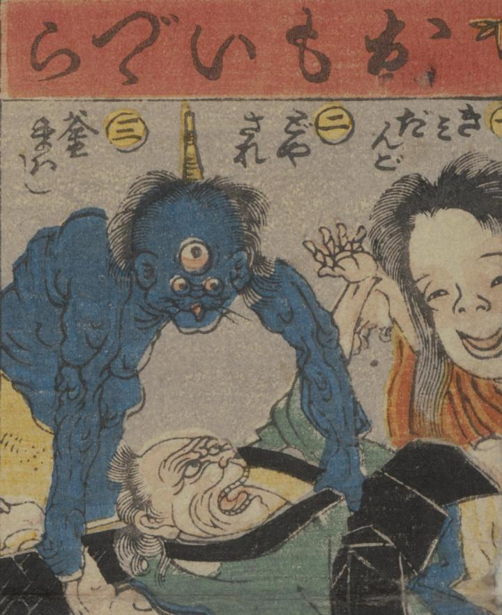

葛籠；ツヅラ，鬼；オニ，三つ目；ミツメ，化物；バケモノ

『舌切り雀』のお婆さんが持ち帰った重い葛籠から、三つ目の鬼や化物が現われ、お婆さんが驚いている。
著作者：一惠齋芳㡬／出典：親書誌：U426_nichibunken_0381：昔咄赤本壽語禄；ムカシバナシ アカホン スゴロク／日付：2014／資源識別子：U426_nichibunken_0381_0001_0019
Copyright (c)2010- International Research Center for Japanese Studies, Kyoto, Japan. All rights reserved.